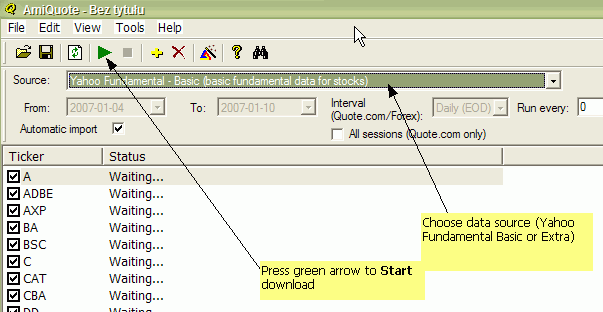

AmiBroker 4.90 adds the ability to use 32 fundamental data items. Fundamental data can be automatically downloaded for all U.S. stocks for free using AmiQuote. New Information window allows you to view these items, while new AFL function: GetFnData allows you to access fundamentals programmatically.
To display fundamental data in Information window, please use Symbol->Information menu. This will open Information window with several fundamental data fields as shown in the picture below (if you created new database, it probably will not have these data present initially and you would need to download them)
New version of AmiQuote now features the ability to download free fundamental data from Yahoo Finance website. This is implemented using 2 different Yahoo pages:
That page provides the following data:
EPS (ttm)
EPS Est Current Year
EPS Est Next Year
EPS Est Next Quarter
PEG Ratio
Book Value
EBITDA
Sales Revenue
Dividend Pay date
Ex Dividend date
Dividend Per Share
1yr Target Price
Shares Float
Shares Outstanding
Explanation of values: http://help.yahoo.com/help/us/fin/quote/quote-03.html
That page provides the following data:
Forward P/E
PEG Ratio
Profit Margin
Operating Margin
Return on Assets
Return on Equity
Revenue (ttm)
Qtrly Revenue Growth
Gross Profit
EBITDA
(Diluted) EPS
Qtrly Earnings Growth
Book Value Per Share
Operating Cash Flow
Levered Free Cash Flow
Beta
Shares Outstanding
Float
% Held by Insiders
% Held by Institutions
Shares Short (prior month)
Shares Short
Forward Annual Dividend Rate
Trailing Annual Dividend Rate
Dividend Date
Ex-Dividend Date
Last Split Factor
Last Split DateExplanation of values: http://help.yahoo.com/help/us/fin/research/research-12.html
IMPORTANT NOTE: Unregistered version of AmiQuote allows you to download fundamental-extra data for the first 20 tickers in the list. To download data for more symbols you need to register AmiQuote.
Downloading data is easy and straightforward:

Once download is complete, you should see fundamental data updated in Information window in AmiBroker.
To access fundamental data from AFL level, you can use new GetFnData function. It has a quite simple syntax:
GetFnData("field")
where "field" is any of the following fundamental data fields supported. For detailed list please see GetFnData function reference.
The function returns the number (scalar) representing the current value of a fundamental data item. There is no history of values (no arrays are returned), so it is useful for scanning, explorations (for the current situation), market commentary/interpretation, but not for backtesting. Example exploration formula looks as follows:
AddColumn( Close / GetFnData( "EPS" )
, "Current P/E ratio" );
AddColumn( Close / GetFnData( "EPSEstNextYear" )
, "Est. Next Year P/E ratio" );
Filter = Status("lastbarinrange");
IMPORTING FUNDAMENTAL DATA FROM OTHER SOURCES
AmiBroker also allows importing fundamentals using its flexible ASCII importer and/or OLE interface as all new fields are exposed as properties of Stock object.
ASCII importer $FORMAT command now supports the following extra fields for fundamental data:
DIV_PAY_DATE
EX_DIV_DATE
LAST_SPLIT_DATE
LAST_SPLIT_RATIO
EPS
EPS_EST_CUR_YEAR
EPS_EST_NEXT_YEAR
EPS_EST_NEXT_QTR
FORWARD_EPS
PEG_RATIO
BOOK_VALUE (requires SHARES_OUT to be specified as well)
BOOK_VALUE_PER_SHARE
EBITDA
PRICE_TO_SALES (requires CLOSE to be specified as well)
PRICE_TO_EARNINGS (requires CLOSE to be specified as well)
PRICE_TO_BV (requires CLOSE to be specified as well)
FORWARD_PE (requires CLOSE to be specified as well)
REVENUE
SHARES_SHORT
DIVIDEND
ONE_YEAR_TARGET
MARKET_CAP (requires CLOSE to be specified as well - it is used to calculate
shares outstanding)
SHARES_FLOAT
SHARES_OUT
PROFIT_MARGIN
OPERATING_MARGIN
RETURN_ON_ASSETS
RETURN_ON_EQUITY
QTRLY_REVENUE_GROWTH
GROSS_PROFIT
QTRLY_EARNINGS_GROWTH
INSIDER_HOLD_PERCENT
INSTIT_HOLD_PERCENT
SHARES_SHORT_PREV
FORWARD_DIV
OPERATING_CASH_FLOW
FREE_CASH_FLOW
BETA
Note that if you want to import only fundamental data using the ASCII importer
(without quotes) you need to use $NOQUOTES 1 command. See Formats\aqfe.format
and Formats\aqfn.format files for example usage - these
are the files actually
used
by AmiQuote to implement
automatic
import
of
fundamental data downloaded from Yahoo.
The names of extra properties of the Stock object are the same as those used by GetFnData function and they are listed in detail in OLE objects reference.